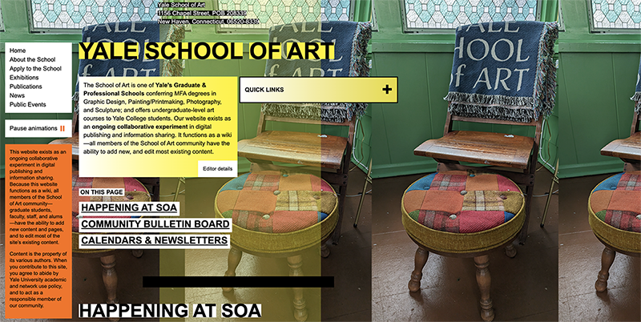
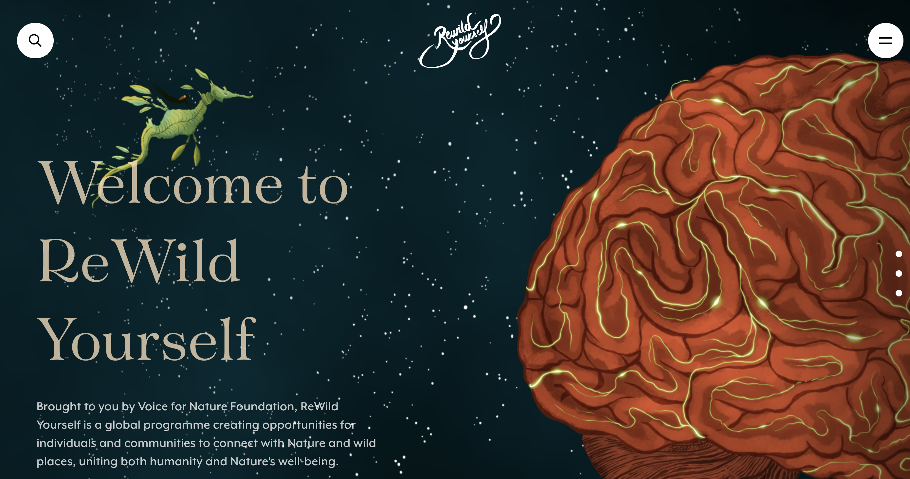

The Role of Color in Web Design
Color plays a powerful role in how users experience a website. It can guide attention, create emotion, and either clarify or confuse the message. By comparing two different websites, it became clear how color choices can dramatically impact usability and perception.
Yale School of Art (Disliked)
Click Here to Visit Yale School of Art Website
The Yale School of Art website is widely known for its unconventional and chaotic design. One of the most striking elements is its use of color. The site often features bright, clashing backgrounds, layered images, and inconsistent color palettes across pages.
From a user experience perspective, this creates visual overload. Too many colors compete for attention, making it difficult to focus on important information. The lack of hierarchy and inconsistent color use also reduces readability.
While the site may be intended as an artistic experiment, it can feel overwhelming and disorienting for users trying to navigate it.

Rewild Yourself (Liked)
Click Here to Visit Rewild Yourself Website
The Rewild Yourself website uses color in a calm and intentional way that supports its message. The site focuses on connecting people with nature, and its color palette reflects that purpose.
Earth-toned colors like greens, whites, and soft neutrals create a sense of calm. The consistent use of color across the site makes it easy to navigate and understand.
Unlike the Yale site, the color on Rewild Yourself helps guide the user experience rather than distract from it. The color reinforces the message and creates a welcoming, grounded feeling.

Conclusion
Color is not just for decoration, but is a functional design tool. When used thoughtfully, it enhances clarity, emotion, and usability. When overused or applied inconsistently, it can create confusion and frustration.
These two examples show that it's not about how many colors are used, but how effectively they support the user's experience.